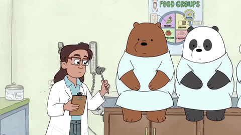

Hello World! Follow me in my life, academically and professionally!
Well, I suppose this is the start of a new chapter for me. In most introductory programming classes,
this would be my “Hello World” post. This is my metaphorical, "Hello From The Other Side! (of the screen)".
But really though. “Hello from the OTTER Side (of the screen)”
However! This will be a chapter that started in the middle of my second semester of my second year in
college. A chapter that not only marks my growth and maturation, but also where and when I require an
outlet for my thoughts, feelings, and rants. This WILL be a chapter that I can proudly look back it,
with “No Ragrets”.
What ragrets could I possibly have?
Inspired by medical blogs and websites that I read for news and content, I wanted to create
something of my own that can encapsulate my own thoughts, views, and ideas along with my knack
and passion for technology itself. As a result, I will be dedicating this site to track and follow
my journey though Fred Trotter and David Uhlman's book regarding standards, workflows, and meaningful use
of private health information in healthcare today, "Hacking Healthcare" which can be found
here!
Below, I've linked a video from a YouTuber that is a "physician, off-white rapper, and purveyor of the finest medical
satire. These specific videos highlight issues that I am very interested in myself as it pulls into relevance
the topic of Health IT and how it should and could be used to improve health outcomes.
Readmission, cleverly remixed from one of the many R. Kelly hits, Ignition, is an eye-opening about the medical
and financial burden of what is known as the "revolving door" in medical admissions and healthcare.
Readmission is a large factor and issue today not only for the American healthcare system,
but also for the entire economic backbone internationally as well.
As one of the industries with the highest cost expenditures already, medicine and readmissions are clearly
not helping as they increase the use of resources and costs for both the patients and providers as a whole.
Though I hope to pursue medical school in the future, I am also inspired by Health IT and the
further advancement and integration into a patient-based healthcare system. These past few
decades has seen a gradual shift from personal trial and error and individual care to a system
that is based on metrics, numbers, and satisfaction/quality scores.
Medicine has become a business. Simple as that. Clear cut and crisp. Though!
the one thing that still remains the same, and can draw a connection to technology is the need
to always debug and find the problems in the whole picture.

Thanks to Eric Tendian, I found this cute yet relevant GIF. [Pronounced GIF, not JIFF]
Although the intent has been good, in order to drive costs down
and lower the risk of human-error in medical documentation, it has essentially taken away
one of the most important factors in healthcare, the humanistic and empathetic aspect that had once
been the foundation of this prestigious and well-respected profession. So, if you are
interested in following along with me on the path about Health IT, you can follow me on my
blog here!
If you want some appropriate music to mark the end of this page! Click the play button below!